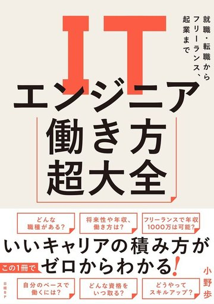

PROFILE

小野 歩おの あゆむ
株式会社テックワークス 代表取締役／著者
大分県大分市生まれ。九州大学大学院を卒業後、NECにITエンジニアとして勤務。2009年に独立し、イベント・店舗・IT事業の3社を経営。IT勉強会・交流会「tecHub」を秋葉原で毎月主宰し、ITエンジニアのキャリア相談にこれまで1,000人以上乗ってきた。著書に『ITエンジニア働き方超大全』（日経BP）、『ITエンジニア1年目の教科書』（講談社）、『IT仕事図鑑』（インプレス、共著）。
| — | 大分県大分市に生まれる |
|---|---|
| — | 九州大学大学院 卒業 |
| — | NEC入社。ITエンジニアとして勤務 |
| 2009年11月 | 独立。イベント・セミナーの企画運営会社を設立（1社目） |
| 2017年12月 | 店舗運営の会社を設立（2社目）。漢方・薬膳のセレクトショップと整体院を運営 |
| 2022年7月 | 株式会社テックワークスを設立（3社目）。システム開発・プログラミングスクール・キャリア支援・出版 |
| 現在 | 3社の経営のかたわら、「tecHub」を秋葉原で主宰。執筆、講演、キャリア相談、独立支援 |
※ NEC在籍期間などの年号は公開前に補います。
新着情報
-
 『IT仕事図鑑』（インプレス）が刊行されました。増井敏克さんとの共著です
2026
『IT仕事図鑑』（インプレス）が刊行されました。増井敏克さんとの共著です
2026
-
『ITエンジニア1年目の教科書』（講談社）刊行。代官山 蔦屋書店で出版記念トークイベントを行いました
2026
-

『ITエンジニア働き方超大全』が「ITエンジニア本大賞2025」ビジネス書部門ベスト10に選ばれました 2025
※ 月日は公開前に確定します。
事業内容
-

出版事業
「ITエンジニアの働き方とキャリア」をテーマに、1,000人以上のキャリア相談と毎月の勉強会で見聞きしたことを本にまとめています。
『ITエンジニア働き方超大全』はAmazon 11部門で1位、ITエンジニア本大賞2025 ビジネス書部門ベスト10。『ITエンジニア1年目の教科書』『IT仕事図鑑』と続けて刊行しました。
-
講演・研修事業
企業の新人研修や内定者向け、大学・専門学校、カンファレンス、ウェビナーなどでお話ししています。
よくお話しするのは、ITエンジニア1年目の過ごし方、AI時代のエンジニアの働き方、IT職種の全体像、会社員からの独立といったテーマ。45分から120分くらいまで、対象と目的に合わせて組み直します。
-
写真を挿入
tecHub 開催風景コミュニティ事業
IT勉強会・交流会「tecHub」を秋葉原で毎月開催しています。主催・共催イベントの参加者は延べ3,500人ほど。
直接会って話してみたい、という方は、ぜひ一度お越しください。その場でお話しできます。
-
キャリア支援事業
個人の方のキャリア相談は、これまで1,000人以上お受けしてきました。独立や起業を考えている方の相談も。
企業の採用や育成、組織づくりの壁打ちもお受けしています。「IT業界で働く人の可能性を広げる」方向であれば、会社の規模や業種は問いません。
-
写真を挿入
開発・スクールの風景システム開発・教育事業
株式会社テックワークスでは、システム開発とプログラミングスクールを運営しています。
エンジニアの採用や育成での連携、教材や研修コンテンツの監修、システム開発のご相談もどうぞ。
-
写真を挿入
イベント・店舗の風景イベント・店舗事業
1社目はイベント・セミナーの企画運営の会社。企画から当日の設営、運営、スタッフの手配まで一通り手がけます（ラフォーレ六本木、渋谷WOMBほか）。
2社目は店舗の会社。漢方・薬膳のセレクトショップと整体院を運営しています。
コンテンツ
出演・掲載
- 伸びる1年目は何が違う？ 現場で差がつくスキルと学習習慣TECH PLAY Channel（YouTube）
- ITエンジニアのキャリアビジョン ― 市場価値を高める考え方SCSK GROUP（YouTube）
- 高年収？働き方自由？「エンジニア就活」の裏側NewsPicks ハバヒロ就活カレッジ
- ダイバーシティニュース テクノロジーグロービス学び放題（出演）
- AI時代のITキャリア形成についてインプレスグループ（インタビュー）
- 『ITエンジニア1年目の教科書』出版記念トークイベント代官山 蔦屋書店
- tecHub（IT勉強会・交流会）秋葉原で毎月開催
お気軽にお問い合わせください
講演・研修、取材・対談・出演、執筆・監修、協業、各種ご質問はこちらからお問い合わせください。
内容が固まっていなくても構いません。原則として2営業日以内にお返事します。